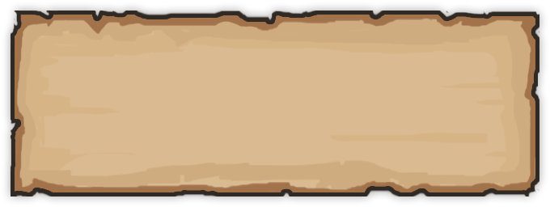

CREADOR

Jesús Fresneda
¡Hola! Soy Jesús, el desarrollador detrás de The Three Faces, un roguelike en el que todo gira en torno a una idea sencilla: lanzar una moneda para cambiar entre dos formas diferentes. Quería probar algo que fuera fácil de aprender pero que ofreciera muchas posibilidades, y este proyecto es justo eso. Espero que os guste el juego tanto como a mí me está gustando crearlo.